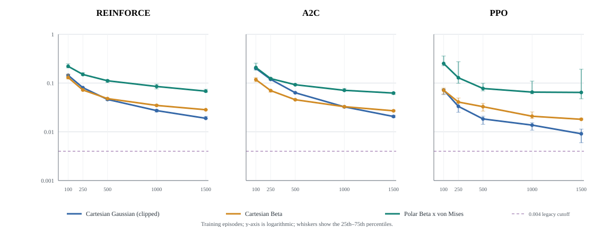
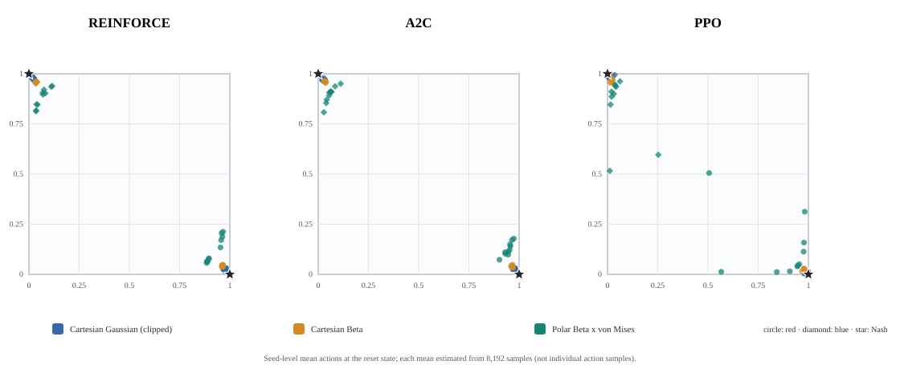

A two-player, general-sum game: a red house and a blue house each want a shared "dog" as close as possible to their own doorstep. Each round both sides pick a point to pull toward; the dog moves to w₀·dog + w₁·pickred + w₂·pickblue, where w₁ = (1−w₀)w and w₂ = (1−w₀)(1−w) — with w₀ = 0 the dog fully re-targets every round; above that it only partially closes the gap, giving it some inertia. Because the domain is bounded, players are pushed to exaggerate toward the edge to counteract each other — the same logic behind two influencers each staking out an exaggerated opinion to drag a shared audience toward them. Source, tests, and training code: github.com/Charith-Reddy-Pareddy/dog-game.
Drag the solid house markers anywhere in the square to re-pose the game. Set a max step δ and each player walks toward their pick by an angle and a distance of at most δ per round instead of jumping there. Raise w₀ to give the dog inertia — it then only partially closes the gap to each round's target instead of teleporting there, so "Run to equilibrium" takes more rounds but still settles on the same point. The displayed proxy grid-searches 31 × 31 unrestricted actions in the one-shot, no-inertia blend. It does not account for the current dog state, the max-step constraint or inertia, and is not exploitability of the walking or dynamic game. Treat it only as a one-shot reference score; the dynamic equilibrium has not been solved.
These numbers come from real self-play training runs (PyTorch REINFORCE,
1500 episodes each, 5 house/weight configurations × 3 network
architectures × 5 seeds — reproduce with
python3 -m doggame.dog_game_study), not from this page. Each
row is five runs. Exploitability is the same check as the live simulator
above, applied to the trained policy's learned actions.
Swipe the table sideways to see every column.
| Architecture | Houses (red / blue) | w | Converged | Median exploitability | Worst run |
|---|
separate architecture on
setup 2, seed 0, at 0.18; the
other four seeds of that setup converge. The three architectures do not
separate (24 of 25,
25 of 25 and 25 of 25). Policy
gradient does converge here, but "1500 episodes" isn't a number you can
quote without naming the setup and the algorithm it was measured on.
Each experiment below answers one of the open research questions with saved
runs (results/dog_game_studies.jsonl, 484 runs in all); the
code is doggame/dog_game_studies.py. A run counts as converged
below 0.004 exploitability, which is my threshold, so the medians are shown too.
Share of the 25 runs per algorithm (5 setups × 5 seeds) under 0.004 after each number of training episodes.
Swipe the table sideways to see every column.
| Algorithm | 100 episodes | 250 episodes | 500 episodes | 1000 episodes | 1500 episodes | Median at the end |
|---|---|---|---|---|---|---|
| REINFORCE | 0 of 25 | 13 of 25 | 24 of 25 | 24 of 25 | 24 of 25 | 0.0002 |
| A2C | 0 of 25 | 13 of 25 | 24 of 25 | 25 of 25 | 25 of 25 | 0.0001 |
| PPO | 19 of 25 | 24 of 25 | 25 of 25 | 25 of 25 | 25 of 25 | 0.0000 |
The same three algorithms on the walking game (see "Walking trajectories" below), 5 seeds each, scored every 25 episodes. A seed is at the corners when the players' summed distance from them is under 0.1; "At N" is the mean distance after N episodes.
Swipe the table sideways to see every column.
| Algorithm | Before training | At 50 | At 100 | At 200 | At 300 | Late checkpoints at the corners (from 150) | Seeds at the corners at the end |
|---|---|---|---|---|---|---|---|
| REINFORCE | 1.49 | 0.696 | 0.341 | 0.130 | 0.055 | 24 of 35 | 4 of 5 |
| A2C | 1.49 | 0.731 | 0.199 | 0.032 | 0.011 | 34 of 35 | 5 of 5 |
| PPO | 1.49 | 0.263 | 0.127 | 0.500 | 0.371 | 14 of 35 | 2 of 5 |
Main game: PPO with 1, 2 and 4 epochs (gradient steps per episode) next to REINFORCE and A2C, 25 runs each.
Swipe the table sideways to see every column.
| Algorithm | Gradient steps per episode | 100 episodes | 250 episodes | 500 episodes | 1000 episodes | 1500 episodes | Median at the end |
|---|---|---|---|---|---|---|---|
| REINFORCE | 1 | 0 of 25 | 13 of 25 | 24 of 25 | 24 of 25 | 24 of 25 | 0.0002 |
| A2C | 1 | 0 of 25 | 13 of 25 | 24 of 25 | 25 of 25 | 25 of 25 | 0.0001 |
| PPO, 1 epoch | 1 | 1 of 25 | 12 of 25 | 20 of 25 | 24 of 25 | 25 of 25 | 0.0002 |
| PPO, 2 epochs | 2 | 9 of 25 | 22 of 25 | 23 of 25 | 25 of 25 | 25 of 25 | 0.0000 |
| PPO, 4 epochs (default) | 4 | 19 of 25 | 24 of 25 | 25 of 25 | 25 of 25 | 25 of 25 | 0.0000 |
Walking game: PPO with fewer epochs and/or a smaller learning rate, 5 seeds each, next to A2C.
Swipe the table sideways to see every column.
| Setting | Before training | At 50 | At 100 | At 200 | At 300 | Late checkpoints at the corners (from 150) | Seeds at the corners at the end |
|---|---|---|---|---|---|---|---|
| A2C (reference) | 1.49 | 0.731 | 0.199 | 0.032 | 0.011 | 34 of 35 | 5 of 5 |
| PPO, lr 0.01, 4 epochs (default) | 1.49 | 0.263 | 0.127 | 0.500 | 0.371 | 14 of 35 | 2 of 5 |
| PPO, lr 0.01, 1 epoch | 1.49 | 0.595 | 0.479 | 0.249 | 0.123 | 21 of 35 | 4 of 5 |
| PPO, lr 0.003, 4 epochs | 1.49 | 0.477 | 0.361 | 0.448 | 0.362 | 15 of 35 | 1 of 5 |
| PPO, lr 0.003, 1 epoch | 1.49 | 0.836 | 0.641 | 0.470 | 0.322 | 8 of 35 | 2 of 5 |
A2C and two PPO settings trained for 900 episodes (late checkpoints from 450), 5 seeds each.
Swipe the table sideways to see every column.
| Setting | Before training | At 300 | At 600 | At 900 | Late checkpoints at the corners (from 450) | Seeds at the corners at the end |
|---|---|---|---|---|---|---|
| A2C | 1.49 | 0.011 | 0.003 | 0.003 | 95 of 95 | 5 of 5 |
| PPO, 4 epochs (default) | 1.49 | 0.371 | 0.499 | 0.669 | 50 of 95 | 3 of 5 |
| PPO, 1 epoch | 1.49 | 0.123 | 0.033 | 0.007 | 77 of 95 | 5 of 5 |
A2C with another maximum step or discount, 300 episodes, 5 seeds each.
Swipe the table sideways to see every column.
| Setting | Before training | At 50 | At 100 | At 200 | At 300 | Late checkpoints at the corners (from 150) | Seeds at the corners at the end |
|---|---|---|---|---|---|---|---|
| max step 0.1, discount 0.9 | 1.08 | 0.439 | 0.386 | 0.234 | 0.184 | 20 of 35 | 3 of 5 |
| max step 0.2, discount 0.9 (default) | 1.49 | 0.731 | 0.199 | 0.032 | 0.011 | 34 of 35 | 5 of 5 |
| max step 0.4, discount 0.9 | 1.67 | 0.509 | 0.182 | 0.036 | 0.028 | 32 of 35 | 5 of 5 |
| max step 0.2, discount 0.5 | 1.49 | 0.409 | 0.088 | 0.009 | 0.003 | 35 of 35 | 5 of 5 |
| max step 0.2, discount 0.99 | 1.49 | 0.836 | 0.442 | 0.102 | 0.056 | 22 of 35 | 4 of 5 |
The three algorithms on the default setup and three others, 5 seeds each, 300 episodes. Each setup has its own Nash corners.
Swipe the table sideways to see every column.
| House setup | Algorithm | Before training | At 100 | At 300 | Late checkpoints at the corners (from 150) | Seeds at the corners at the end |
|---|---|---|---|---|---|---|
| default: (0.88, 0.12) / (0.3, 0.65), w = 0.5 | REINFORCE | 1.49 | 0.341 | 0.055 | 24 of 35 | 4 of 5 |
| default: (0.88, 0.12) / (0.3, 0.65), w = 0.5 | A2C | 1.49 | 0.199 | 0.011 | 34 of 35 | 5 of 5 |
| default: (0.88, 0.12) / (0.3, 0.65), w = 0.5 | PPO | 1.49 | 0.127 | 0.371 | 14 of 35 | 2 of 5 |
| (0.9, 0.2) / (0.1, 0.8), w = 0.5 | REINFORCE | 1.41 | 0.569 | 0.168 | 14 of 35 | 2 of 5 |
| (0.9, 0.2) / (0.1, 0.8), w = 0.5 | A2C | 1.41 | 0.275 | 0.070 | 22 of 35 | 3 of 5 |
| (0.9, 0.2) / (0.1, 0.8), w = 0.5 | PPO | 1.41 | 0.836 | 0.515 | 14 of 35 | 2 of 5 |
| (0.8, 0.8) / (0.2, 0.3), w = 0.3 | REINFORCE | 1.31 | 0.707 | 0.239 | 18 of 35 | 4 of 5 |
| (0.8, 0.8) / (0.2, 0.3), w = 0.3 | A2C | 1.31 | 0.429 | 0.036 | 29 of 35 | 5 of 5 |
| (0.8, 0.8) / (0.2, 0.3), w = 0.3 | PPO | 1.31 | 0.974 | 0.932 | 9 of 35 | 1 of 5 |
| (0.7, 0.1) / (0.6, 0.9), w = 0.7 | REINFORCE | 1.55 | 0.897 | 0.848 | 2 of 35 | 0 of 5 |
| (0.7, 0.1) / (0.6, 0.9), w = 0.7 | A2C | 1.55 | 0.842 | 0.688 | 4 of 35 | 0 of 5 |
| (0.7, 0.1) / (0.6, 0.9), w = 0.7 | PPO | 1.55 | 0.838 | 1.153 | 4 of 35 | 1 of 5 |
A2C with dog inertia (w₀), default setup, 5 seeds each.
Swipe the table sideways to see every column.
| Setting | Before training | At 50 | At 100 | At 200 | At 300 | Late checkpoints at the corners (from 150) | Seeds at the corners at the end |
|---|---|---|---|---|---|---|---|
| w0 = 0 (default) | 1.49 | 0.731 | 0.199 | 0.032 | 0.011 | 34 of 35 | 5 of 5 |
| w0 = 0.3 | 1.50 | 0.880 | 0.459 | 0.088 | 0.015 | 31 of 35 | 5 of 5 |
| w0 = 0.6 | 1.51 | 0.995 | 0.513 | 0.187 | 0.114 | 25 of 35 | 4 of 5 |
If one player walks straight to its corner at full speed and stays, the other's best response is solved numerically; the gain is how much more reward it gets than following the straight walk.
Swipe the table sideways to see every column.
| House setup | Players start | Red's gain | Blue's gain | Largest gain as a share of the reward |
|---|---|---|---|---|
| default: (0.88, 0.12) / (0.3, 0.65), w = 0.5 | on their houses | 0.00000 | 0.00173 | 0.29% |
| default: (0.88, 0.12) / (0.3, 0.65), w = 0.5 | on the corners | 0.00000 | 0.00000 | 0.00% |
| (0.9, 0.2) / (0.1, 0.8), w = 0.5 | on their houses | 0.00248 | 0.00248 | 0.13% |
| (0.9, 0.2) / (0.1, 0.8), w = 0.5 | on the corners | 0.00000 | 0.00000 | 0.00% |
| (0.8, 0.8) / (0.2, 0.3), w = 0.3 | on their houses | 0.00004 | 0.00297 | 3.09% |
| (0.8, 0.8) / (0.2, 0.3), w = 0.3 | on the corners | 0.00000 | 0.00000 | 0.00% |
| (0.7, 0.1) / (0.6, 0.9), w = 0.7 | on their houses | 0.01524 | 0.03014 | 4.74% |
| (0.7, 0.1) / (0.6, 0.9), w = 0.7 | on the corners | 0.00000 | 0.00000 | 0.00% |
The setup whose houses share a y-coordinate, 10 seeds per architecture.
Swipe the table sideways to see every column.
| Layout | red top, blue bottom | red bottom, blue top | both at y = 0.5 | other | Median exploitability |
|---|---|---|---|---|---|
| separate | 8 of 10 | 2 of 10 | 0 of 10 | 0 of 10 | 0.00009 |
| shared | 7 of 10 | 3 of 10 | 0 of 10 | 0 of 10 | 0.00008 |
| partial | 8 of 10 | 2 of 10 | 0 of 10 | 0 of 10 | 0.00018 |
REINFORCE with the dog's own weight w₀ at 0, 0.3, 0.6 and 0.9; the second row is the setup that was slowest above.
Swipe the table sideways to see every column.
| House setup | w0 = 0.0 | w0 = 0.3 | w0 = 0.6 | w0 = 0.9 |
|---|---|---|---|---|
| (0.9, 0.2) / (0.1, 0.8), w = 0.5 | 5 of 5 (median 0.0002) | 5 of 5 (median 0.0002) | 5 of 5 (median 0.0002) | 5 of 5 (median 0.0006) |
| (0.8, 0.8) / (0.2, 0.3), w = 0.3 | 4 of 5 (median 0.0007) | 5 of 5 (median 0.0016) | 1 of 5 (median 0.0102) | 0 of 5 (median 0.0295) |
Solved by dynamic programming (each coordinate separately, 401 dog positions, 101 actions), against holding the one-shot Nash actions. Each cell: the largest action gap on the path from the starting dog position / the share of dog positions where the two differ, for x and y.
Swipe the table sideways to see every column.
| House setup | w0 = 0.3: path gap / states differing (x, y) | w0 = 0.6: path gap / states differing (x, y) | w0 = 0.9: path gap / states differing (x, y) |
|---|---|---|---|
| (0.9, 0.2) / (0.1, 0.8), w = 0.5 | 0.00 / 0%, 0% | 0.00 / 0%, 0% | 0.00 / 0%, 5% |
| (0.8, 0.8) / (0.2, 0.3), w = 0.3 | 0.00 / 0%, 29% | 0.00 / 5%, 30% | 0.00 / 14%, 30% |
| (0.7, 0.1) / (0.6, 0.9), w = 0.7 | 0.00 / 57%, 0% | 0.01 / 76%, 0% | 0.00 / 84%, 0% |
| (0.95, 0.5) / (0.05, 0.5), w = 0.5 | 0.50 / 0%, 100% | 0.50 / 0%, 100% | 0.50 / 0%, 100% |
| (0.6, 0.6) / (0.4, 0.4), w = 0.5 | 0.00 / 15%, 15% | 0.00 / 51%, 51% | 0.00 / 68%, 68% |
In one coordinate, with discount g, let k = (1 − g w₀²) / (1 − g w₀) and give each player the target T = d* + k (h − d*), where d* is the one-shot Nash dog position.
Each cell: share of dog positions where holding fails, by Proposition 1 / in the dynamic program; Proposition 2's largest action gap to the dynamic program.
Swipe the table sideways to see every column.
| House setup | w0 = 0.3: hold fails, theory / DP; gap to DP | w0 = 0.6: hold fails, theory / DP; gap to DP | w0 = 0.9: hold fails, theory / DP; gap to DP |
|---|---|---|---|
| (0.9, 0.2) / (0.1, 0.8), w = 0.5 | x 0% / 0%; 0.00, y 0% / 0%; 0.00 | x 0% / 0%; 0.00, y 0% / 0%; 0.00 | x 0% / 0%; 0.00, y 5% / 5%; 0.01 |
| (0.8, 0.8) / (0.2, 0.3), w = 0.3 | x 0% / 0%; 0.00, y 30% / 29%; 0.01 | x 6% / 5%; 0.00, y 30% / 30%; 0.01 | x 14% / 14%; 0.01, y 30% / 30%; 0.01 |
| (0.7, 0.1) / (0.6, 0.9), w = 0.7 | x 58% / 57%; 0.01, y 0% / 0%; 0.00 | x 76% / 76%; 0.01, y 0% / 0%; 0.00 | x 84% / 84%; 0.01, y 0% / 0%; 0.00 |
| (0.95, 0.5) / (0.05, 0.5), w = 0.5 | x 0% / 0%; 0.00, y 100% / 99%; shared | x 0% / 0%; 0.00, y 100% / 100%; shared | x 0% / 0%; 0.00, y 100% / 100%; shared |
| (0.6, 0.6) / (0.4, 0.4), w = 0.5 | x 16% / 15%; 0.00, y 16% / 15%; 0.00 | x 51% / 51%; 0.00, y 51% / 51%; 0.00 | x 68% / 68%; 0.00, y 68% / 68%; 0.00 |
200 random one-coordinate games: the largest one-round gain from deviating from Proposition 2's policy, with continuation values from simulating the dog.
Swipe the table sideways to see every column.
| One-shot equilibrium | Games | Explicit policy is an equilibrium (gain < 1e-9) | Largest one-round gain | Holding is Markov-perfect |
|---|---|---|---|---|
| straddle | 77 | 77 of 77 | 0.0e+00 | 30 of 77 |
| interior | 123 | 70 of 123 | 2.3e-02 | 0 of 123 |
Every episode starts from a random dog position (five seeds per row unless stated). Score: the most a player gains by changing one round's action and then following the learned policy again; every feedback equilibrium scores 0.
Swipe the table sideways to see every column.
| Setting | Policy | Runs | Largest one-round gain: median (range) | Mean one-round gain: median |
|---|---|---|---|---|
| setup 3, w0 = 0.6 | Proposition 2 | 1 | 0.0000 | 0.0000 |
| setup 3, w0 = 0.6 | hold the one-shot actions | 1 | 0.0756 | 0.0114 |
| setup 3, w0 = 0.6 | REINFORCE | 5 | 0.1537 (0.1156 to 0.6714) | 0.0275 |
| setup 3, w0 = 0.6 | A2C | 5 | 0.0756 (0.0755 to 0.0759) | 0.0115 |
| setup 3, w0 = 0.6 | PPO | 5 | 0.0756 (0.0756 to 0.4599) | 0.0115 |
| setup 3, w0 = 0.6 | REINFORCE, Beta policy | 5 | 0.0900 (0.0855 to 0.1287) | 0.0247 |
| setup 3, w0 = 0.6 | A2C, Beta policy | 5 | 0.0854 (0.0813 to 0.0891) | 0.0222 |
| setup 3, w0 = 0.6 | PPO, Beta policy | 5 | 0.0991 (0.0700 to 0.4077) | 0.0323 |
| setup 3, w0 = 0.6 | A2C, 15000 episodes | 3 | 0.0756 (0.0756 to 0.0756) | 0.0114 |
| setup 3, w0 = 0.6 | A2C, Beta policy, 15000 episodes | 3 | 0.0791 (0.0776 to 0.0798) | 0.0150 |
| setup 5, w0 = 0.9 | Proposition 2 | 1 | 0.0000 | 0.0000 |
| setup 5, w0 = 0.9 | hold the one-shot actions | 1 | 0.2084 | 0.0397 |
| setup 5, w0 = 0.9 | REINFORCE | 5 | 0.2014 (0.1506 to 0.3832) | 0.0337 |
| setup 5, w0 = 0.9 | A2C | 5 | 0.2084 (0.2084 to 0.2084) | 0.0397 |
| setup 5, w0 = 0.9 | PPO | 5 | 0.2084 (0.2084 to 0.2084) | 0.0397 |
Noise-free gradient play on one coordinate: each player follows the exact gradient of its own payoff, averaged over starting positions, with a table of actions or a small shared network.
Swipe the table sideways to see every column.
| Setting | Policy | Runs | Within 0.05 of Proposition 2 | Within 0.05 of holding | Largest one-round gain: median (range) |
|---|---|---|---|---|---|
| setup 3 x, w0 = 0.6 | table, clamp | 1 | 1 of 1 | 0 of 1 | 0.0000 |
| setup 3 x, w0 = 0.6 | table, sigmoid | 1 | 1 of 1 | 0 of 1 | 0.0007 |
| setup 3 x, w0 = 0.6 | network, 16 units | 5 | 0 of 5 | 1 of 5 | 0.0479 (0.0479 to 0.0756) |
| setup 3 x, w0 = 0.6 | network, 64 units | 5 | 0 of 5 | 0 of 5 | 0.0479 (0.0479 to 0.0479) |
| setup 5 x, w0 = 0.9 | table, clamp | 1 | 1 of 1 | 0 of 1 | 0.0000 |
| setup 5 x, w0 = 0.9 | table, sigmoid | 1 | 1 of 1 | 0 of 1 | 0.0000 |
| setup 5 x, w0 = 0.9 | network, 16 units | 5 | 0 of 5 | 2 of 5 | 0.1042 (0.1042 to 0.1042) |
| setup 5 x, w0 = 0.9 | network, 64 units | 5 | 0 of 5 | 1 of 5 | 0.1042 (0.1042 to 0.1042) |
As the time step shrinks (w₀ = 1 − dt, discount e−r dt), holding the one-shot actions needs slack at least (1 + r)/(2 + r), and Proposition 2's equilibrium becomes bang-bang: push the edge toward d* + (r + 2)/(r + 1) (h − d*) and switch there. With a Gaussian shock σ√dt on the dog, setup 3's x coordinate, r = 0.5:
Swipe the table sideways to see every column.
| Dog | Time step | Noise sigma | Red switches at | Blue switches at | Value iteration |
|---|---|---|---|---|---|
| closed form (Proposition 2) | 0.05 | 0 | 0.718 | 0.520 | - |
| closed form (Proposition 2) | 0.025 | 0 | 0.709 | 0.527 | - |
| continuous-time limit | 0 | 0 | 0.700 | 0.533 | - |
| clipped to [0, 1] | 0.05 | 0.0 | 0.725 | 0.520 | 554 sweeps |
| clipped to [0, 1] | 0.05 | 0.1 | 0.760 | 0.530 | 550 sweeps |
| clipped to [0, 1] | 0.05 | 0.2 | 0.765 | 0.545 | 559 sweeps |
| clipped to [0, 1] | 0.05 | 0.4 | 0.790 | 0.585 | did not converge |
| clipped to [0, 1] | 0.025 | 0.0 | 0.710 | 0.530 | 1107 sweeps |
| clipped to [0, 1] | 0.025 | 0.2 | 0.765 | 0.550 | 1117 sweeps |
| unclipped | 0.05 | 0.0 | 0.725 | 0.520 | 554 sweeps |
| unclipped | 0.05 | 0.02 | 0.730 | 0.525 | 551 sweeps |
| unclipped | 0.05 | 0.05 | 0.740 | 0.525 | 548 sweeps |
| unclipped | 0.05 | 0.1 | 0.760 | 0.530 | 550 sweeps |
| unclipped | 0.05 | 0.2 | 0.765 | 0.545 | 559 sweeps |
| unclipped | 0.05 | 0.4 | 0.775 | 0.585 | 605 sweeps |
N houses drawn from a skewed distribution (Beta(2, 5)), equal weights, 200 draws per N, one coordinate. The one-shot dog is the generalized median of the average voting rule (Renault and Trannoy, 2005); Proposition 1 holds for any number of players.
Swipe the table sideways to see every column.
| Houses N | One-shot dog: mean (sd); limit 0.339 | No pivot inside (limit 0.34) | Largest inertia: mean | N times it, median when no pivot |
|---|---|---|---|---|
| 2 | 0.368 (0.115) | 0.20 | 0.0399 | 0.27 |
| 4 | 0.340 (0.090) | 0.28 | 0.0357 | 0.43 |
| 8 | 0.340 (0.055) | 0.34 | 0.0206 | 0.27 |
| 16 | 0.337 (0.038) | 0.29 | 0.0111 | 0.45 |
| 32 | 0.340 (0.028) | 0.35 | 0.0058 | 0.33 |
| 64 | 0.341 (0.019) | 0.32 | 0.0024 | 0.32 |
| 128 | 0.339 (0.013) | 0.34 | 0.0012 | 0.34 |
| 256 | 0.340 (0.010) | 0.34 | 0.0007 | 0.33 |
| 512 | 0.340 (0.007) | 0.28 | 0.0003 | 0.43 |
| 1024 | 0.340 (0.005) | 0.32 | 0.0002 | 0.35 |
The one-shot game is an exact potential game (as proved for the Battling Influencers Game), and its potential is exactly flat along the shared-y continuum, so it cannot choose. Fifty REINFORCE runs per initial exploration noise, separate layout; the last column tests that the two mirror images are equally likely, as the setup's symmetry says.
Swipe the table sideways to see every column.
| Initial noise (std) | red top, blue bottom | red bottom, blue top | both at y = 0.5 | other | p (mirror images equally likely) |
|---|---|---|---|---|---|
| 0.14 | 19 of 50 | 22 of 50 | 0 of 50 | 9 of 50 | 0.76 |
| 0.37 | 31 of 50 | 19 of 50 | 0 of 50 | 0 of 50 | 0.12 |
| 0.61 (default) | 31 of 50 | 19 of 50 | 0 of 50 | 0 of 50 | 0.12 |
| 1.00 | 30 of 50 | 20 of 50 | 0 of 50 | 0 of 50 | 0.20 |
Why the boundary: two ablations at the default noise, 50 seeds each.
Swipe the table sideways to see every column.
| Policy mean in y, actions and dog | red top, blue bottom | red bottom, blue top | both at y = 0.5 | other | Red's final y: quartiles | Red's y outside [0, 1] |
|---|---|---|---|---|---|---|
| sigmoid, clipped (default) | 31 of 50 | 19 of 50 | 0 of 50 | 0 of 50 | 0.00 / 0.99 / 1.00 | 0 of 50 |
| sigmoid, not clipped | 20 of 50 | 21 of 50 | 0 of 50 | 9 of 50 | 0.03 / 0.64 / 0.97 | 0 of 50 |
| linear, not clipped | 17 of 50 | 20 of 50 | 0 of 50 | 13 of 50 | -2.26 / 0.33 / 1.29 | 38 of 50 |
Sum of value changes around a 4-cycle of unilateral policy changes, from the starting dog position on setup 1; it is zero in every Markov potential game.
Swipe the table sideways to see every column.
| Inertia w0 | Policies that ignore the dog | Policies that react to the dog |
|---|---|---|
| 0.0 | +6.7e-15 | +7.90 |
| 0.3 | +3.1e-15 | +7.12 |
| 0.6 | +1.8e-15 | +5.63 |
| 0.9 | +5.6e-15 | +1.85 |
Training on setup 2 (red top-right, blue bottom-left at equilibrium), from scratch or after 1500 episodes on another setup.
Swipe the table sideways to see every column.
| Starting point | after 100 episodes | after 300 episodes |
|---|---|---|
| from scratch | 0 of 5 (median 0.0599) | 2 of 5 (median 0.0048) |
| pre-trained on setup 1 | 0 of 5 (median 0.1599) | 0 of 5 (median 0.2289) |
| pre-trained on setup 5 | 5 of 5 (median 0.0002) | 4 of 5 (median 0.0002) |
Each cell: median error of the fixed point's Q-values / median gap of the strategy, against the exact solution on a 9 × 9 grid.
Swipe the table sideways to see every column.
| Fictitious-play iterations | re-solve every 1: Q error / gap | re-solve every 5: Q error / gap | re-solve every 25: Q error / gap |
|---|---|---|---|
| 10 | 0.3612 / 0.0583 | 0.3612 / 0.0583 | 0.3612 / 0.0583 |
| 30 | 0.1311 / 0.0215 | 0.1311 / 0.0215 | 0.1311 / 0.0215 |
| 100 | 0.0406 / 0.0067 | 0.0406 / 0.0067 | 0.0406 / 0.0067 |
| 300 | 0.0136 / 0.0023 | 0.0136 / 0.0023 | 0.0136 / 0.0023 |
| 1000 | 0.0041 / 0.0007 | 0.0041 / 0.0007 | 0.0041 / 0.0007 |
| 3000 | 0.0014 / 0.0002 | 0.0014 / 0.0002 | 0.0014 / 0.0002 |
Exact (Lemke-Howson) solution of the discretized stage game, all five setups.
Swipe the table sideways to see every column.
| Grid | Actions per player | Matrix entries | Setups with a unique equilibrium found (of 4) | Shared-y setup: distance to the solver's equilibrium | Equilibrium is one action pair | Seconds (median) |
|---|---|---|---|---|---|---|
| 3 x 3 | 9 | 81 | 2 | 1.00 | yes | 0.003 |
| 5 x 5 | 25 | 625 | 4 | 1.00 | yes | 0.031 |
| 9 x 9 | 81 | 6,561 | 4 | 1.00 | yes | 0.356 |
| 13 x 13 | 169 | 28,561 | 4 | 1.00 | yes | 2.017 |
| 17 x 17 | 289 | 83,521 | 4 | 1.00 | yes | 116.625 |
Indifference check at its default floor of 0.001, five seeds per row.
Swipe the table sideways to see every column.
| Fictitious-play iterations | Indifference spread | Actions counted as played | Weight on the leftover first pick |
|---|---|---|---|
| 30 | 0.6415 | 2 | 0.03226 |
| 100 | 0.6496 | 2 | 0.00990 |
| 300 | 0.6519 | 2 | 0.00332 |
| 1000 | 0.0000 | 1 | 0.00100 |
| 3000 | 0.0000 | 1 | 0.00033 |
| 10000 | 0.0000 | 1 | 0.00010 |
| exact (Lemke-Howson) | 0.0000 | 1 | 0.00000 |
What is the walking game? It is the angle-radius version of the dog game. Instead of jumping straight to any point, each player stands somewhere (starting on its own house) and every round picks a direction and a step length of up to 0.2, then walks that way. The dog moves to the average of the two players' new positions, and each player is rewarded for the dog being close to its own house. Below, one sampled 15-step game before and after training, on the setup red (0.88, 0.12), blue (0.3, 0.65), w = 0.5. REINFORCE picks an angle and a step length; the Nash-Q network picks one of 10 compass directions. Pick a method and a seed, then press play or drag the slider to step through the game.
Squares are the houses, × marks the one-shot Nash corner, open circles are starts, filled circles are where each walker is at this step, and the dashed gray line is the dog. The faint lines show the whole game. The readout under each panel is how far each player is from its corner. Each seed is one sampled game, not an average; the five-seed numbers are in the dog-game results PDF in the repository.
A separate report on one question: how well do the policy-gradient methods REINFORCE, A2C and PPO learn the walking game, the angle-radius version of the dog game? It covers the policy, the three algorithms, five experiments and what they do and do not show, and says how many runs each claim rests on.
Open the PDF Read it on GitHub
Each player samples an absolute point using an angle and normalized ray fraction from the square center. The study compares that policy package with Cartesian Beta and the existing clipped Gaussian; the handwritten DQN and Q-value sketches were excluded. The game is scored at its reset state, not over the full training-state distribution.
Open the concise PG PDF Read the update on GitHub Primary protocol Robustness protocol
Median across ten seeds; IQR whiskers. The 0.004 line is the legacy deterministic-action cutoff and is descriptive here.

Each marker is a seed's estimated mean action from 8,192 samples at the reset state. Stars are the analytical Nash actions; markers are means, not sampled action clouds.

The questions that motivated the project, with what the experiments here settled. Open a question to see its status and the evidence. The full answers, with numbers and caveats, are in the research report (PDF) and in RESEARCH_QUESTIONS.md.
Policy gradient is a single-agent algorithm; two copies played against each other are best-response dynamics, not a game solver, and nothing guarantees mutual improvement converges.
Status: Answered for the dog game (74 of 75 REINFORCE runs, 25 of 25 PPO runs); open for general-sum games in general.
Status: Answered. It depends on the configuration and on the algorithm.
Status: Answered for one target setup. It helps a lot when the source setup has the same equilibrium corners and hurts when it does not.
Status: Answered for the shared-coordinate setup. Never the solver's interior point; always a boundary equilibrium, one of two mirror images, and which one is consistent with a fair coin over 50 seeds (31 to 19 at the default noise, p = 0.12).
An exact solver gives an exact equilibrium; fictitious play only approximates one. How much stage-game error can the outer Bellman iteration tolerate?
Status: Answered for the dog game. The error of the fixed point falls about as 1 over the number of fictitious-play iterations.
Status: Open as a literature question; this repository measures it for one game but does not survey the literature.
Status: Answered for the dog game. Quality stops improving at 5 x 5; cost keeps growing steeply. The network question is partly answered by the walking game's deep Nash-Q.
Separate networks, a shared trunk, or a partly shared trunk.
Status: Partly answered. All three converge (24, 25 and 25 of 25 runs); cross-play between independently trained architectures is untested.
The conjecture is that the houses must differ in both coordinates.
Status: Answered. Confirmed, and every shared coordinate opens a continuum of equilibria.
Status: Answered. doggame/verify.py implements exploitability and the indifference check.
Status: Answered for the dog game. The exact equilibrium is a single action pair, so all the mixing fictitious play shows is noise.
Status: Open. The state-independent transition, the unique equilibrium and the one-shot payoffs are all dog-game specific.
w0 * dog + w1 * red + w2 * blue), and does inertia change anything besides how long it takes?PartlyStatus: Partly answered. Inertia leaves the steady state unchanged but slows policy-gradient training sharply on the harder setup. The exact feedback equilibrium plays the one-shot actions on the equilibrium path but not at every dog position (Q19).
Status: Open. The dog game has one state.
Status: Out of scope for this repository.
Status: Partly addressed by the walking version, which uses an angle and a step length.
Status: Answered. On the main game PPO is much faster per episode (19 of 25 runs converged after 100 episodes, against 0 of 25) and A2C is not faster than REINFORCE. With one epoch (one gradient step per episode, like the others) PPO is no faster than REINFORCE, so the speed-up comes from reusing each episode (Q24). On the walking game the order changes (Q26).
The potential is flat along the continuum, so the expected gradient there is zero and the players' means random-walk until the box stops them; nothing pulls them back to the interior. Without clipping, 41 of 50 runs still end on a mirror boundary; with an unbounded mean in y as well, the walk does not stop (38 of 50 end outside the box). The mirror image is a fair coin; an earlier 10-seed result that the noise flips it did not hold up with 50 seeds.
Status: Answered for the shared-y setup.
Status: Answered for two setups. On the easy setup every run converges up to w0 = 0.9; on the hard one 4 of 5 converge at w0 = 0, 5 of 5 at 0.3, 1 of 5 at 0.6 and 0 of 5 at 0.9 within 1500 episodes.
On the equilibrium path the exact feedback equilibrium plays the one-shot Nash actions; off it, it differs. In closed form, holding the one-shot actions everywhere is Markov-perfect if and only if every player's slack beyond the dog is at least w₀ (1 − g w₀) / (1 − g w₀²) and no one-shot action is interior; in the five setups that holds only in setup 1 up to w₀ = 0.6.
Status: Answered.
Status: Open on the mechanism. The measured pattern (same corners help, flipped corners hurt) suggests the network has to un-learn a boundary direction, but that is a hypothesis.
Status: Answered for the dog game. No: with a state-independent transition, every Q matrix differs from the payoffs by a constant, so the equilibrium never moves between iterations.
Status: Answered for the five setups and five grid sizes tested (25 games). Yes.
Status: Answered for the resting state and for the straight-walk profile (8 checks, four house setups). Both players resting on the corners is an exact equilibrium (gain 0 in all four setups). Walking straight to the corners at full speed is a near-equilibrium: the best deviation gains 0.13% to 4.7% of the reward. The equilibrium of the full dynamic game with feedback strategies was not computed.
Status: Answered for the main game (75 runs of PPO with 1, 2 and 4 epochs). No clear lead per gradient step. After 100 episodes 1, 9 and 19 of 25 runs had converged with 1, 2 and 4 epochs, and one-epoch PPO is no faster than REINFORCE.
Status: Partly answered for A2C on one house setup (20 runs). A lower discount makes learning faster (0.5: 5 of 5 seeds, 35 of 35 later checkpoints at the corners) and a higher one slower (0.99: 4 of 5, 22 of 35); a longer step (0.4) costs nothing, and a shorter one (0.1) is slower (3 of 5, 20 of 35) within 300 episodes. The one-shot corners do not depend on either, so this is about how fast the players get there, not where.
Status: Answered for one house setup (15 runs). A2C is the most reliable (5 of 5 seeds at the corners at the end, 34 of 35 later checkpoints under 0.1); REINFORCE is slower (4 of 5, 24 of 35); PPO gets there fastest but does not stay (2 of 5, 14 of 35).
Status: Open on the mechanism. A smaller learning rate does not help, fewer epochs help, and default PPO's failures persist (two of five seeds never return to the corners in 900 episodes), so it is not just slow; reusing each episode seems to contribute, but that is a hypothesis.
Status: Answered for the settings tried. Fewer epochs help (4 of 5 seeds after 300 episodes, 5 of 5 after 900), a smaller learning rate does not (1 of 5 and 2 of 5 after 300), and one-epoch PPO is still much slower than A2C (0.12 against 0.011 mean distance after 300 episodes).
Status: Answered for one-epoch PPO and the default (30 runs with A2C). One-epoch PPO settles (5 of 5 seeds at the corners after 900 episodes) and default PPO does not (3 of 5, with two seeds stuck far away). The smaller learning rate settings were not run longer.
Status: Partly answered. The 900-episode hard-setup study is complete (5 seeds per algorithm); PPO was also run with inertia at 0.3 and 0.6 (5 seeds each). These small, single-setup comparisons extend evidence but do not establish generalization.
A 64-unit network was tested with one and four epochs. The one-epoch variant ended under the corner threshold in 4/5 seeds (mean distance 0.218); four epochs did so in 1/5 (0.704). The 16-unit default with four epochs did so in 2/5 (0.371). Results are exploratory at five seeds; an entropy bonus was not tested.
Status: Partly answered for network capacity.
The polar policy had higher expected gain than Cartesian Beta in all 30 paired algorithm-seed comparisons on the primary setup. A separate REINFORCE follow-up on four other setups was mixed: two intervals favor Cartesian Beta and two include zero. The score is at the reset state; action family changes along with coordinates.
Status: Partly answered for the tested configurations. No general polar improvement is established.
Concise policy-gradient update · Primary protocol · Robustness protocol
4-cycles of unilateral policy changes sum to +7.90, +7.12, +5.63 and +1.85 at w₀ of 0, 0.3, 0.6 and 0.9 when policies react to the dog, and to zero when they do not.
Status: Answered: no, though it is a potential game in open-loop strategies.
When the houses lie on either side of the dog, each player aiming the next dog position at d* + k (h − d*) is a feedback equilibrium (proved, not yet refereed; 77 of 77 random games; within one grid step of the dynamic program). When a one-shot action is interior it fails in 53 of 123 random games.
Status: Partly answered.
As the time step shrinks, Proposition 2's equilibrium becomes bang-bang with explicit switching points, and holding needs slack at least (1 + r)/(2 + r). A noisy dog keeps the equilibrium bang-bang but moves the switching points, also without clipping, unlike a linear-quadratic benchmark with an action cost.
Status: Partly answered; continuous-time q-learning is open.
With equal weights the one-shot dog converges to the generalized median d = 1 − F(d), the known outcome of the average voting rule. With inertia, holding the one-shot actions is Markov-perfect only without a pivot player inside the box (about one draw in three) and below an inertia of about 0.35/N.
Status: Partly answered; the many-house feedback equilibrium and what learners find are open.
From random dog positions, A2C and PPO learn to hold the one-shot actions everywhere (19 of 20 runs across two settings), which a player can exploit off the equilibrium path. Five times longer training and a Beta policy do not change this; REINFORCE does not do better.
Noise-free gradient play finds it with a table of actions but not with a shared network.
Status: Answered for two settings: no; function approximation is what stops it.
Where the instructions left something open, I picked the simplest reasonable option. These are the choices to check, and the questions that would settle them. The full list is in ASSUMPTIONS.md. A printable copy is available as ASSUMPTIONS.pdf.